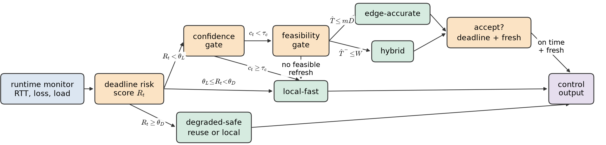
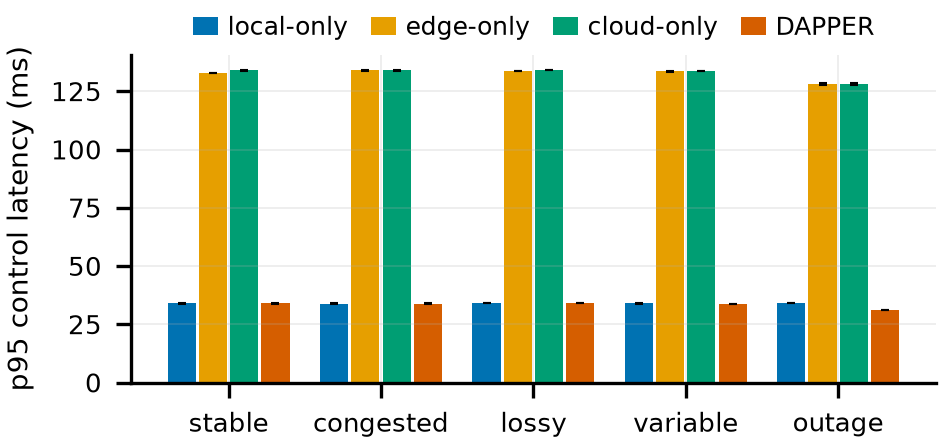
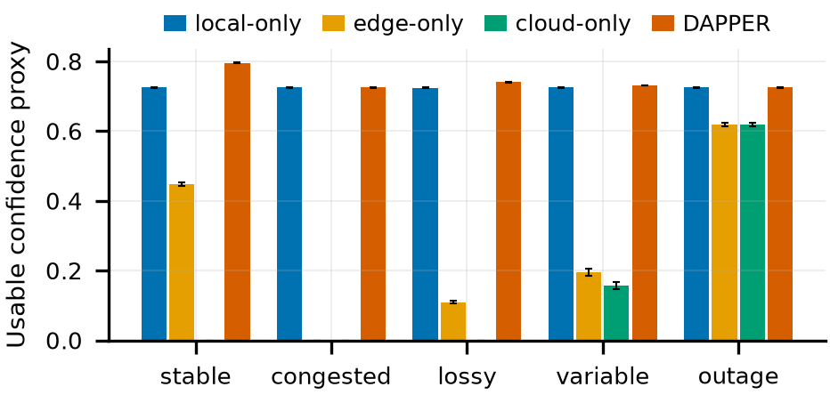
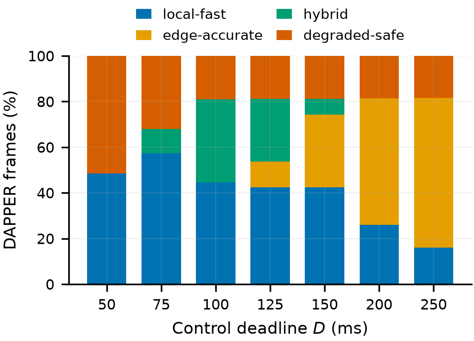
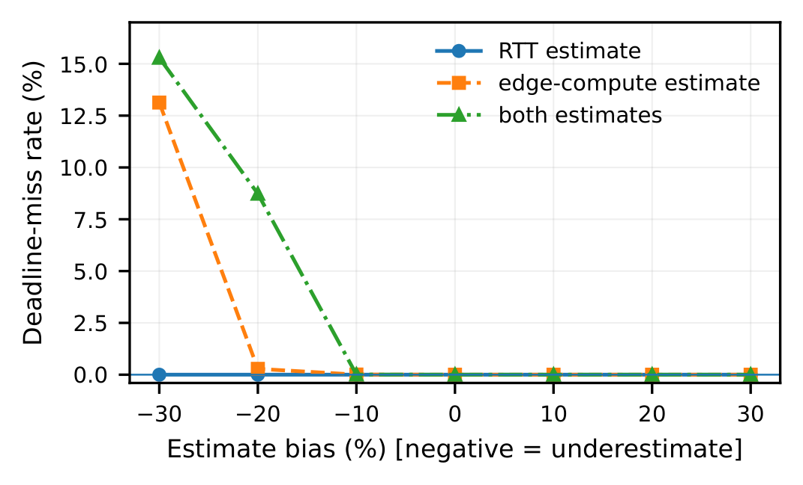

DAPPER: Deadline-Aware Edge Perception for Mission-Critical Robots under Dynamic Network Conditions
© {{ieee_year}} IEEE. Personal use of this material is permitted. Permission from IEEE must be obtained for all other uses, in any current or future media, including reprinting/republishing this material for advertising or promotional purposes, creating new collective works, for resale or redistribution to servers or lists, or reuse of any copyrighted component of this work in other works. This is the accepted version of the manuscript, posted by the authors. The published version will appear in the Proceedings of the 2026 IEEE International Conference on Fog and Mobile Edge Computing (FMEC), DOI {{doi}}.
Abstract—Mission-critical robotic perception must deliver useful outputs before the control loop acts; a high-quality result that arrives after its deadline may no longer be actionable. This paper presents DAPPER (Deadline-Aware Perception Placement for Edge Robotics), a deterministic per-frame scheduler that combines round-trip time, packet loss, edge load, deadline pressure, frame freshness, and local-model confidence into an auditable deadline-risk decision. DAPPER selects local-fast, edge-accurate, hybrid, or degraded-safe execution and accepts remote results only while they remain fresh and on time. The revised evaluation uses {{n_seeds}} independent seeds, paired pre-generated scenarios, calibrated parameters, adaptive baselines, ablations, and 95% confidence intervals over {{n_decisions_words}} frame-level decisions. At a 100-ms control deadline, DAPPER records {{worst_miss}}% deadline misses across all {{n_profiles_words}} evaluated synthetic profiles while maintaining local-level tail latency, and no output older than its freshness window is ever accepted. Relative to local-only, it raises the usable confidence proxy under stable, lossy, and variable conditions. A secondary experiment with YOLO11n and YOLO11m on all {{coco_images}} COCO 2017 validation images confirms a measurable local/remote perception-quality gap and shows recall gains under stable and lossy replay without deadline misses. Sensitivity analysis also locates the architecture's failure mode: deadline risk is concentrated in the decision to commit a frame to remote execution. The network study remains synthetic and does not constitute physical-robot safety validation.
Index Terms—edge artificial intelligence, fog computing, mobile edge computing, robotics, real-time perception, deadline-aware scheduling, computation offloading, collaborative inference
I. Introduction
Robotic perception increasingly depends on computationally intensive algorithms for object detection, tracking, navigation, and hazard recognition. In time-critical applications, semantic quality and timing cannot be separated: a confident result that becomes available after the actuation deadline can be operationally useless. Such systems must therefore be judged not only by model quality, but by deadline compliance, tail latency, output freshness, and fallback behavior.
Remote inference offers more capable models than an onboard processor, at the cost of network delay, jitter, packet loss, server-load variation, and disconnection. Fog and mobile edge computing shorten the distance to compute resources, yet the best execution site still changes frame by frame: always offloading fails during short congestion bursts, while always staying local forfeits remote quality on a healthy network.
We therefore treat the problem as continuous deadline management rather than a one-time offloading choice. For every frame the robot should decide whether to run a fast local model, commit to remote inference, return a local result while requesting a refinement, or retreat to a conservative fallback—and it must reject a remote result that arrives after its deadline or freshness window.
We present DAPPER, whose scheduler is deliberately deterministic and auditable: every decision follows from an explicit risk score, thresholds, local confidence, and a remote-feasibility test rather than an opaque learned policy. Our contributions are (i) a per-frame placement policy combining deadline risk, local confidence, freshness-gated remote acceptance, and an explicit conservative fallback; (ii) an evaluation methodology built on immutable paired scenarios, disjoint calibration and evaluation seeds, calibrated adaptive comparators, and seed-level bootstrap intervals; (iii) a corrected benchmark over {{n_decisions_words}} decisions across {{n_profiles_words}} network conditions, with ablations and sensitivity to deadline and runtime-estimation error; and (iv) a secondary validation on measured YOLO11n/YOLO11m detections over the full COCO 2017 validation split. This revision also corrects four defects in the original prototype—unused local confidence, uncharged failed offloads, conflated freshness semantics, and unpaired policy comparison. The implementation, generated results, and reproduction scripts are available at https://github.com/4waiz/Dapper.
II. Related Work and Positioning
A. Cloud, Fog, and Edge Robotics
FogROS2 demonstrated adaptive Robot Operating System 2 (ROS 2) execution across cloud and fog resources for computationally demanding robotic workloads [1]. FogROS2-PLR subsequently studied probabilistic latency reliability and redundant paths for cloud robotics [2]. ElasticROS explored elastic collaboration between robots and remote resources [3]. More recent work has moved toward runtime adaptation: Yang and Hu adapt ROS 2 node placement as network and compute conditions change [4], while Pavel et al. study real-time perception offloading for resource-constrained autonomous mobile robots (AMRs) in Industrial Internet of Things (IIoT) environments [5].
These systems establish the value of dynamic robot–edge cooperation. DAPPER targets a narrower layer inside the perception loop: whether the current frame should depend on remote inference, whether a refinement is still temporally valid, and when a local path should be kept instead of waiting.
B. Collaborative Inference and Deadline-Aware Scheduling
Collaborative deep neural network (DNN) inference has long studied device–cloud partitioning, latency, and energy. Neurosurgeon partitions DNN computation between device and cloud [6], and Edgent adds early exits and right-sizing [7]. At the scheduling level, Raj et al. propose deadline-driven heuristics for DNN workloads across edge and cloud, validated on real drone and edge hardware [8], and Qian et al. apply deep reinforcement learning to edge-resource allocation for mobile computer vision [11]. Surveys document the breadth of fog/edge scheduling objectives [9], [10].
DAPPER is not claimed as the first adaptive offloader. Its contribution is the combination of per-frame placement, an auditable deadline-risk score, a local-confidence gate, hybrid execution that keeps an immediate local answer while seeking a refinement, explicit stale-result rejection, and a degraded reuse path. These mechanisms complement middleware timing policies such as ROS 2 deadline, lifespan, and liveliness quality of service (QoS) [12]: middleware expresses timing intent, whereas DAPPER changes where perception executes.
III. System Model and DAPPER Framework
The target system contains a camera-equipped robot or client, a nearby edge node, and an optional cloud service. Frame $f_t$ is captured at time $t$ and must produce a usable perception output before control deadline $D$. The primary benchmark uses $D = 100$ ms.
As shown in Fig. 1, the runtime monitor observes round-trip time (RTT), packet loss, normalized edge load, frame age, and edge availability. The scheduler combines five normalized signals into
where $a_t$ is frame age and $\hat{C}_E$ is the estimated edge compute time. The weights are non-negative and sum to one, and every term is clipped to $[0, 1]$, so $R_t \in [0, 1]$ even when RTT exceeds the deadline, as it does under the outage profile.
Two thresholds map risk to the first-stage decision. If $R_t \ge \theta_D$, DAPPER selects degraded-safe: it reuses the last valid output only while that output is still fresh, otherwise it runs the guaranteed local path. If $\theta_L \le R_t < \theta_D$, it selects local-fast. Only the low-risk region $R_t < \theta_L$ reaches the confidence gate, where a local confidence $c_t \ge \tau_c$ keeps the frame on device.
A weak local result then reaches the remote-feasibility gate, which has three outcomes and uses two different estimates of remote completion. DAPPER selects edge-accurate only when the expected completion $\hat{T}$ fits a fraction $mD$ of the deadline, because that branch commits the frame to the network and retains no local answer. It selects hybrid when the optimistic completion $\hat{T}^{-}$, taken from the low end of the configured edge envelope, could still arrive inside the freshness window $W$; hybrid returns the local result immediately and risks only bandwidth, so an optimistic test is appropriate. If even $\hat{T}^{-}$ cannot land in time, DAPPER returns to local execution without transmitting, since a reply that would be rejected on arrival can only waste uplink capacity. This third outcome is what keeps offload traffic near zero under congestion.
Table I reports the frozen configuration selected on calibration data. Frame age is constant at zero in this benchmark because scheduling occurs at capture, so its weight is unidentifiable and is pinned to zero rather than allowing it to rescale informative signals. The term remains in (1) because it becomes meaningful when frames queue before scheduling.

IV. Experimental Methodology
A. Corrected Execution and Paired Scenarios
The prototype is a self-contained Python package containing the scheduler, scenario generator, shared executor, local/edge/cloud perception models, statistics and plotting modules, trace replay, and {{n_tests}} automated tests. All policies use one execution model, so none can be advantaged by a private cost accounting. The network-profile RTT is the edge access RTT and the cloud path adds an {{cloud_extra_rtt}}-ms wide-area component; scheduler prediction and execution use the same timing expression, and a unit test asserts that the two cannot drift apart.
For every seed–profile pair the benchmark pre-generates an immutable scenario trace before any policy runs. {{n_streams_words}} independent random streams fix the network state and the potential local, edge, and cloud outcomes of every frame, including latency, confidence, loss, and detections. All policies replay that trace, so a decision selects an outcome but cannot alter the random future, giving exact frame-level pairing.
Communication accounting is shared. Every transmitted request is charged its upload bandwidth even when the packet is lost or the reply arrives too late to accept, and a lost or overdue request pays a deadline-bounded client timeout before local fallback. Edge availability is observable before transmission through a health check, so offloading to a node already known to be unreachable transmits nothing and costs nothing; this keeps the fixed baselines from being penalized for a failure they could have avoided. Both control-output latency (to the first usable fresh output, used for deadline compliance) and final-output latency (including a later accepted refinement) are recorded, and reuse, output age, freshness validity, and rejection causes are logged separately. Frames are independent with carried-over last-valid state rather than a full queueing simulation, which is stated so that no greater fidelity is inferred than is implemented.
B. Network Profiles and Perception Models
The {{n_profiles_words}} synthetic network profiles are shown in Table II. RTT is temporally correlated and outage events persist in short bursts. Local synthetic inference draws {{local_latency_range}} ms latency and confidence {{local_conf_range}}. Edge inference draws {{edge_latency_range}} ms compute, confidence {{edge_conf_range}}, and {{edge_upload_kb}} kB upload per transmitted frame. Cloud inference draws {{cloud_latency_range}} ms compute, confidence {{cloud_conf_range}}, {{cloud_upload_kb}} kB upload, and the additional wide-area RTT.
C. Calibration, Baselines, and Statistics
Parameters are selected on calibration seeds {{cal_seeds}} only; evaluation uses disjoint seeds {{eval_seeds}}. A deterministic search evaluates {{n_candidates}} candidate configurations, including the previously published and uniform configurations. Candidates are ranked by a predeclared lexicographic objective: minimize worst-profile deadline misses; minimize stale acceptance; maximize usable confidence; minimize worst-profile p95 control latency; then minimize bandwidth. Levels within one standard error are carried forward rather than collapsed into an arbitrary weighted score. Of the {{n_candidates}} candidates, {{n_zero_miss}} reach zero worst-profile deadline misses on calibration seeds, which indicates that deadline reliability follows from the policy structure rather than from a fortunate choice of weights.
The final evaluation uses {{n_seeds}} independent seeds and {{n_frames}} frames per seed, profile, and policy. {{n_policies_words_cap}} policies are evaluated: local-only, edge-only, cloud-only, DAPPER, deadline-greedy, confidence-and-deadline, RTT-threshold, and an offline oracle. The three adaptive comparators are calibrated on the same seeds and objective as DAPPER. The oracle reads the realized outcome of the current frame and is therefore an upper bound, not a deployable policy.
The unit of statistical replication is the seed, not the frame, because frames within a run are autocorrelated. Reported intervals are 95% percentile bootstrap confidence intervals (CIs) over the {{n_seeds}} seed-level values using {{n_boot}} fixed-seed resamples. Policy differences are paired seed by seed.
D. Secondary Real-Detector Validation
To replace the synthetic quality proxy with measured perception in a secondary experiment, two You Only Look Once (YOLO) family models, YOLO11n and YOLO11m [13], are evaluated on the full {{coco_images}}-image Common Objects in Context (COCO) 2017 validation set [14]. The lightweight YOLO11n acts as the local model and YOLO11m as the remote model. Detection uses confidence threshold 0.25 and intersection-over-union (IoU) matching at 0.50; recall, precision, and mean average precision (mAP) are reported. Model outputs and compute times are cached and replayed through the same policies; the network side remains synthetic. This experiment is performed on one workstation and is not an embedded or physical-robot timing study.
V. Results
A. Repeated Main Benchmark
Table III reports the corrected fixed-policy comparison at $D = 100$ ms. Across all {{n_profiles_words}} profiles and all {{n_seeds}} seeds, DAPPER records a {{worst_miss}}% deadline-miss rate. Local-only is also deadline-safe, so the central question is whether DAPPER recovers useful remote quality while preserving that reliability.
Figure 2 summarizes tail latency and the usable confidence proxy. Under the variable profile, DAPPER holds p95 control-output latency at {{p95_var_dapper}}, compared with {{p95_var_edge}} for edge-only and {{p95_var_cloud}} for cloud-only. Relative to local-only, DAPPER raises the usable confidence proxy under stable by {{gain_stable}}, lossy by {{gain_lossy}}, and variable by {{gain_variable}}. Under congested and outage profiles, the paired CI includes zero, so no quality difference is claimed.


B. Placement Behavior and Stale-Result Rejection
Table IV shows how DAPPER reaches these results and what its offloading actually buys. The policy adapts strongly to the profile: it offloads on {{stable_offload}}% of stable frames but on {{outage_offload}}% of outage frames, where it instead serves {{outage_reuse}}% of frames from a still-fresh previous output. At this deadline the committing edge-accurate mode is never selected, because the expected remote round trip does not fit the commit margin; all remote activity is hybrid, which never exposes the control loop to network delay.
The same table quantifies stale-result rejection, which the original artifact described but did not measure. Across every policy, profile, and seed in the final evaluation—{{n_runs}} runs—the rate at which an output older than its freshness window is consumed is exactly {{worst_stale}}%; a unit test asserts this end to end rather than leaving it as a claim. Rejection is nonetheless frequent: of the remote replies DAPPER requests under the stable profile, {{stable_accepted}}% are accepted, {{stable_late}}% are discarded for arriving after the deadline, and {{stable_lost}}% are lost. Under the lossy profile only {{lossy_accepted}}% are accepted, with {{lossy_late}}% rejected on the deadline and {{lossy_lost}}% lost. This is also the honest explanation of the bandwidth column in Table III: because every transmitted request is charged whether or not its reply proves usable, roughly half the stable-profile traffic and the large majority of lossy-profile traffic buys nothing. The previously reported {{edge_upload_kb}} kB variable-profile figure resulted from not charging lost or late attempts and is not retained.
Table IVLeft: DAPPER placement and remote accounting at $D = 100$ ms over {{n_seeds}} seeds; accepted is a percentage of transmitted requests, reuse and stale of all frames. Right: DAPPER against the calibrated adaptive comparators and the offline oracle, averaged over the {{n_profiles_words}} profiles.
† Offline upper bound: reads the realized frame outcome; not deployable.
C. Adaptive Baselines, Ablation, and Sensitivity
The right half of Table IV compares DAPPER with the calibrated adaptive comparators. At $D = 100$ ms the calibrated deadline-greedy and confidence-and-deadline baselines choose settings that never transmit, making them numerically identical to local-only, and the calibrated RTT-threshold policy transmits on under {{rtt_threshold_tx}}% of frames. With this timing envelope, committing an appreciable share of 100-ms frames to the edge produces misses, so each baseline's own objective drives it toward local execution. DAPPER still obtains remote quality because hybrid never commits the control loop to waiting: it keeps a local result and accepts the remote reply only if it actually arrives on time. Against the non-deployable offline oracle, DAPPER recovers approximately {{oracle_share}}% of the oracle's available gain over local-only under the stable profile ({{stable_local_conf}} local-only, {{stable_dapper_conf}} DAPPER, {{stable_oracle_conf}} oracle), although it uses more bandwidth ({{stable_dapper_bw}} versus {{stable_oracle_bw}} MB/{{n_frames}} frames), exposing room for better runtime prediction.
Table V reports one-at-a-time ablations. Removing packet loss from the risk score is the most consequential single change: it raises the risk of the remaining signals after renormalization, suppresses useful offloading, and reduces stable confidence from {{abl_stable_full}} to {{abl_stable_noloss}} and lossy confidence from {{abl_lossy_full}} to {{abl_lossy_noloss}}. Removing the freshness gate raises variable-profile traffic from {{abl_var_full_bw}} to {{abl_var_nofresh_bw}} MB/{{n_frames}} frames (about {{fresh_saving}}%) without a statistically distinguishable confidence gain, which is the clearest demonstration that the gate is a bandwidth mechanism rather than a deadline mechanism. Disabling the confidence gate raises both confidence and traffic, confirming that this gate is the quality/bandwidth knob. Disabling degraded-safe reuse leaves the miss rate at zero but increases outage p95 latency from {{abl_outage_full_p95}} to {{abl_outage_noreuse_p95}} ms. Removing frame age changes no reported metric, consistent with its zero calibrated weight. No ablated variant produced a nonzero deadline-miss rate.
Figure 3 shows two complementary sensitivity results. Edge-accurate is not dead code: it receives no frames at $D \le 100$ ms, first appears at {{edge_first_deadline}} ms, and reaches {{edge_share_max}}% of decisions at {{edge_max_deadline}} ms. However, the frozen single-deadline calibration is not reliable at every larger deadline: the miss rate is {{miss_125}}%, {{miss_150}}%, and {{miss_200}}% at 125, 150, and 200 ms, respectively. The commit margin $m$ is unidentifiable at the 100-ms calibration point because no frame enters edge-accurate there. A direct sweep of that parameter over evaluation seeds confirms the mechanism and bounds it: any $m \le {{safe_margin}}$ holds the miss rate at {{worst_miss}}% at every swept deadline from {{margin_sweep_lo}} to {{margin_sweep_hi}} ms, whereas the calibrated $m = {{calibrated_margin}}$ does not. We report this diagnostic but deliberately do not adopt its value, because it was obtained on evaluation rather than calibration data; multi-deadline calibration is the correct remedy.
Runtime-estimation error is strongly asymmetric. Biasing RTT estimates anywhere from {{bias_lo}} to {{bias_hi}} leaves the miss rate at {{worst_miss}}% in the tested stable, congested, and variable profiles. Underestimating edge compute is the dangerous direction: a 10% underestimate produces a worst-profile miss rate of {{compute_bias_10}}%, while a 30% underestimate reaches {{compute_bias_30}}%; jointly underestimating RTT and compute by 30% reaches {{both_bias_30}}%. Overestimation makes the scheduler more conservative and does not create misses over the tested range. The mechanism is the same one the deadline sweep exposes: an underestimated completion passes the commit test, and a committed frame retains no local answer.


D. Scheduling Overhead and Real-Detector Validation
Over {{overhead_calls}} timed calls after warm-up, one DAPPER decision takes {{overhead_mean}} µs on average (median {{overhead_median}}, p95 {{overhead_p95}}, p99 {{overhead_p99}} µs) in CPython on the evaluation workstation, and running DAPPER instead of local-only adds {{overhead_added}} µs per frame to benchmark wall time. These measure software overhead on a desktop processor, not robot hardware or application inference latency. Depending on profile, DAPPER changes mode {{switch_min}}–{{switch_max}} times per {{n_frames}} frames; no physical switching cost is modeled.
Table VI shows the measured detector gap. YOLO11m increases overall recall by {{recall_gap}} percentage points and recall on the selected safety-relevant classes (person, bicycle, car, motorcycle, bus, truck) by {{safety_gap}} points over YOLO11n. Mean inference times are {{yolo_n_cpu}} ms (YOLO11n) and {{yolo_m_cpu}} ms (YOLO11m) on the workstation central processing unit (CPU), and {{yolo_n_gpu}} ms and {{yolo_m_gpu}} ms on its graphics processing unit (GPU).
Table VII replays every policy over these measured outputs. Under the stable profile DAPPER delivers {{rep_stable_dapper}} recall against {{rep_stable_local}} for local-only, with {{worst_miss}}% deadline misses for both, and {{rep_stable_dapper_safety}} versus {{rep_stable_local_safety}} on safety-relevant classes; edge-only reaches higher recall but misses deadlines. Under the lossy profile the ordering is unambiguous: DAPPER delivers more recall than either fixed policy and misses no deadlines, whereas edge-only misses {{rep_lossy_edge_miss}}%. Under variable and outage conditions DAPPER's all-frame figure falls below local-only because {{rep_var_reuse}}% and {{rep_outage_reuse}}% of its frames respectively reuse a previous output, and a reused output is scored as detecting nothing in the current image: consecutive COCO validation images are unrelated, so this is a lower bound that a real video stream would not incur. The fresh-frame column, which averages only over frames that computed a new output, shows no such gap. Both views are reported rather than choosing whichever is more favorable.
VI. Discussion and Threats to Validity
The results support a deliberately narrow conclusion. At the primary 100-ms operating point, DAPPER preserves the deadline behavior of local inference while recovering part of the quality available from a stronger remote model when the network can support a timely refinement. Its structural advantage over the calibrated adaptive comparators is the hybrid path: the system can ask for a better answer without forcing the control loop to wait for one. The key observations are:
- Deadline reliability is structural, not tuned. {{n_zero_miss}} of {{n_candidates}} candidate configurations reach zero worst-profile misses, and no ablated variant produced a miss.
- The gain over local-only is real but modest and profile-dependent, and it is absent where the network cannot deliver a timely refinement.
- Bandwidth is the price. Once lost and late attempts are charged, about half of stable-profile traffic and most lossy-profile traffic buys no usable result.
- Risk is concentrated in committing. Both the deadline sweep and the estimation-error sweep fail through the same branch; hybrid is never implicated.
- Freshness gating is a bandwidth mechanism, saving roughly {{fresh_saving}}% of variable-profile traffic at no measurable quality cost.
Several limitations restrict generalization. The main benchmark uses parameterized synthetic profiles rather than measured Wi-Fi, fifth-generation (5G), or private-edge traces; trace replay is implemented and tested, but no measured trace was collected, so no result rests on one. The synthetic confidence metric is a proxy, not detector accuracy; the secondary detector experiment removes that limitation but still replays synthetic networking, with both models measured on one workstation rather than embedded hardware. The timing model does not simulate queue buildup between frames. Energy is not instrumented, physical switching cost is not modeled, and no hazard analysis or formal safety guarantee is provided—degraded-safe denotes conservative fallback behavior only. Finally, parameters are calibrated at $D = 100$ ms, and the larger-deadline results show that the frozen configuration should not be assumed valid for all control budgets.
Internal validity rests on exact paired scenarios, one shared execution model, disjoint calibration/evaluation seeds, and seed-level intervals. Every figure and table here is regenerated from released result files by artifact scripts, and the full protocol runs from a single command. Future work should add physical-robot experiments, measured wireless traces, embedded power measurement, queue-aware timing, and multi-deadline calibration.
VII. Conclusion
This paper presented DAPPER, a deterministic deadline- and confidence-aware perception-placement framework for robotic edge computing. The revised evaluation spans {{n_decisions_words}} frame-level decisions over {{n_profiles_words}} network profiles, {{n_policies_words}} policies, and {{n_seeds}} independent seeds. At the calibrated 100-ms deadline, DAPPER records {{worst_miss}}% deadline misses under all evaluated synthetic profiles while holding tail latency at local-inference levels, never accepting an output beyond its freshness window, and improving the usable confidence proxy over local-only when timely remote refinement is possible. Ablation and sensitivity studies identify packet-loss awareness, freshness gating, and conservative remote commitment as the decisive design factors, and locate the architecture's failure mode in the decision to commit a frame to remote execution. A secondary experiment with YOLO11n and YOLO11m on COCO val2017 confirms a real perception-quality gap and shows stable/lossy recall gains under DAPPER replay without deadline misses. These findings support deadline-aware, freshness-gated hybrid placement as a useful mechanism, but they do not establish real-world robotic safety. Physical validation, measured network traces, energy instrumentation, and calibration across control deadlines remain necessary next steps.
References
- J. Ichnowski et al., “FogROS2: An adaptive platform for cloud and fog robotics using ROS 2,” in Proc. IEEE Int. Conf. Robot. Autom. (ICRA), 2023, pp. 5006–5013.
- K. Chen, N. Tian, C. Juette, T. Qiu, L. Ren, J. Kubiatowicz, and K. Goldberg, “FogROS2-PLR: Probabilistic latency-reliability for cloud robotics,” in Proc. IEEE Int. Conf. Robot. Autom. (ICRA), 2025, pp. 16290–16297, doi: 10.1109/ICRA55743.2025.11127588.
- B. Liu et al., “ElasticROS: An elastically collaborative robot operating system for fog and cloud robotics,” arXiv:2209.01774, 2022.
- X. Yang and B. Hu, “An adaptive ROS2 node deployment framework in mobile edge-robot systems,” in Proc. IEEE/RSJ Int. Conf. Intell. Robots Syst. (IROS), 2025, pp. 12652–12658, doi: 10.1109/IROS60139.2025.11247728.
- M.-D. Pavel, M. De Marchi, and G. Stamatescu, “Edge-cloud offloading for real-time perception of resource-constrained AMR in IIoT environments,” in Proc. 22nd Int. Conf. Distributed Computing in Smart Systems and the Internet of Things (DCOSS-IoT), 2026, pp. 521–528, doi: 10.1109/DCOSS-IoT69657.2026.00087.
- Y. Kang, J. Hauswald, C. Gao, A. Rovinski, T. Mudge, J. Mars, and L. Tang, “Neurosurgeon: Collaborative intelligence between the cloud and mobile edge,” in Proc. ASPLOS, 2017, pp. 615–629.
- E. Li, Z. Zhou, and X. Chen, “Edge intelligence: On-demand deep learning model co-inference with device-edge synergy,” in Proc. ACM SIGCOMM Workshop Mobile Edge Commun., 2018, pp. 31–36.
- S. Raj, R. Mittal, H. Gupta, and Y. Simmhan, “Adaptive heuristics for scheduling DNN inferencing on edge and cloud for personalized UAV fleets,” Future Generation Computer Systems, vol. 173, Art. no. 107874, 2025, doi: 10.1016/j.future.2025.107874.
- M. Goudarzi, M. Palaniswami, and R. Buyya, “Scheduling IoT applications in edge and fog computing environments: A taxonomy and future directions,” ACM Computing Surveys, vol. 55, no. 7, pp. 1–41, 2023.
- S. Iftikhar et al., “AI-based fog and edge computing: A systematic review, taxonomy and future directions,” Internet of Things, vol. 21, Art. no. 100674, 2023.
- W. Qian, R. W. L. Coutinho, and A. Boukerche, “A novel DRL-based orchestrator for edge computing resource allocation in mobile computer vision systems,” Computer Networks, vol. 285, Art. no. 112380, 2026, doi: 10.1016/j.comnet.2026.112380.
- Open Robotics, “About quality of service settings,” ROS 2 Documentation. [Online]. Available: https://docs.ros.org/en/rolling/Concepts/Intermediate/About-Quality-of-Service-Settings.html
- Ultralytics, “Ultralytics YOLO11,” 2024. [Online]. Available: https://docs.ultralytics.com/models/yolo11/
- T.-Y. Lin et al., “Microsoft COCO: Common objects in context,” in Proc. Eur. Conf. Comput. Vis. (ECCV), 2014, pp. 740–755.